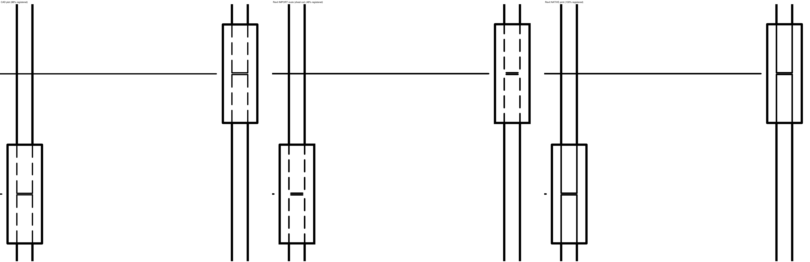

You told me converting doesn't work in either direction, so the typical details are drawn twice. This is the thing I built to take the Revit half of that away: a button in Revit that brings a detail in from the CAD master and prints the way KOR.ctb plots it. You keep drawing in CAD exactly as you do now.
| Step | What | Notes |
|---|---|---|
| 1. Open a drafting view | In the job, in whatever Revit year the job is in. | It only ever lands in a drafting view — never on a plan or a sheet. |
| 2. Pick the detail | The file dialog opens on I:\Kor Structural\002 Typical Details\Typical Details Blocks. Choose the detail's drawing. | The same blocks you keep today; nothing is copied anywhere else. |
| 3. AutoCAD reads it the way the plotter does | In the background, on your own PC, a copy is prepared: every line moves onto a layer named for its printed pen (KOR 0.3, KOR 0.3 SCREEN 15), wide polylines become filled bars, hidden and dashed lines keep their dashes, no-plot layers stay unprinted, blocks keep their layer-0 and BYBLOCK meaning. | Needs AutoCAD on the PC. Takes a few seconds. |
| 4. Revit imports the copy | Into your view, at the detail's scale, each pen given its Revit line weight and its black or grey. | No yellow text, no magenta concrete, no flat line weights. |
| 5. Put it on a sheet | Like any drafting view: drag it onto the sheet, number and title as usual. | That is how all 190 were printed for the comparison below. |
Every detail on the big sheet was brought in (190 of 190, none refused), printed from a Revit sheet, and compared with the CAD plot of the same block under KOR.ctb — not by eye only, by measuring, on 23 October. 181 of the 190 match on everything measured; the other 9 differ in text only, and those are the three questions at the end.
| What | Result | What it means |
|---|---|---|
| Linework | 190 of 190 details: every line within 1/1000" of CAD's | Nothing moved, nothing missing, nothing extra. |
| Dashes | 190 of 190: all 2,098 dashed and hidden lines (in 148 details) dashed at CAD's length | Until today Revit printed them solid — the last fault found, fixed 23 October. Where a dash begins along a line is Revit's choice, so the dashes do not always start at the same point as CAD's; same line to the eye. |
| Bars and fills | filled bars and screened concrete on both prints | The 13% magenta concrete prints as the same light grey; rebar dots are dots, not rings. |
| Text | 181 of 190 details word-for-word; 9 differ | The differences are the font (CAD's SHX letters become a Revit font), the Ø symbol, and word spacing — see "Need from you". |

The CAD master stays the master. The catalogue in the KOR app lists every typical detail with its CAD block, who approved it (Jim) and when; the Revit copy is no longer something anyone draws — the button makes it from the CAD block, in the job's own Revit year, when a job needs it. So: one change, in CAD, approved once, and the Revit side follows. The Typical Details Container in R23 and the details merged into the Concrete Tower template stop being things to keep up to date. Cover sheets are a different matter — engineers change those per job — and nothing here touches them.
| Limit | Where you'd see it | Size |
|---|---|---|
| Font sizes round to ½ pt | Revit's PDF print rounds text height; 2.5 mm text prints at the nearest half point. | Under 0.1 pt on lettering; invisible on paper, measurable with a ruler on the file. |
| SHX fonts | CAD's stroke fonts (simplex, romans) are drawn in a Revit TrueType font instead. | The letters are the same words at the same size; the strokes look slightly different. |
| Splines | A curve drawn as a spline comes in as short straight pieces. | Within 1/1000"; you cannot see it at any plotted scale. |
| Linetypes with a symbol in them | The W.W.M. linetype draws an X along the line in CAD; Revit's line patterns carry dashes only, so the X marks are not there. | One line in one detail of the 190 (D504-20, built-up pool deck). |